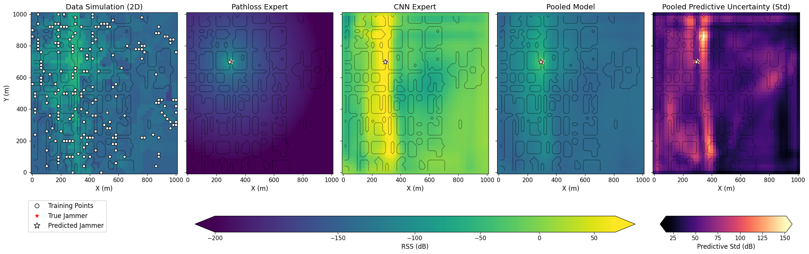

Research
Bayesian and statistical machine learning for robust sensing and distributed learning.
Clustered Federated Learning (CFL) with Unknown Number of Clusters
Motivation
What if clients are heterogeneous and naturally divided into latent groups—without knowing how many groups exist in advance?
In federated learning, clients often differ in data distribution, sensing conditions, or behavior. Treating them as one homogeneous pool can hurt performance; fixing the number of clusters K in advance is often unrealistic.
Approach
In DPMM-CFL, we use a Dirichlet Process Mixture Model (DPMM) for Bayesian nonparametric clustering: the model can grow or merge client groups during training. Restricted Gibbs sampling with split–merge proposals and weighted aggregation enables scalable clustered federated learning across heterogeneous participants.
- Learn cluster structure dynamically instead of pre-specifying K.
- Personalize models per latent group while training jointly.
- Support privacy-preserving collaboration when clients are naturally divided.

DPMM-CFL: nonparametric client clustering and weighted aggregation in federated learning.
Solution
A federated framework that discovers how many client groups are needed, assigns clients adaptively, and aggregates updates in a way that respects heterogeneity—without fixing the cluster count upfront.
CFL
DPMM
Split–Merge MCMC
Bayesian, Federated, and Active Learning Approaches for Jammer Localization
Motivation
Can we localize a jammer from crowdsourced GNSS measurements in challenging urban environments affected by multipath and building shadowing?
GNSS underpins transportation, aviation, and autonomous systems, but remains vulnerable to intentional interference. Detecting jamming is not enough—we need to estimate where the source is, often from sparse, privacy-sensitive measurements shared by many users.
How can we learn to localize jammers collaboratively while keeping raw GNSS data private?
Approach
In Jammer Source Localization with Federated Learning, we combine a differentiable path-loss model with a neural network—the Augmented Physics-Based Model (APBM)—and train it with federated averaging (FedAvg) on crowdsourced RSS measurements.
- Train collaboratively without sharing raw GNSS traces.
- Embed propagation physics in a differentiable model alongside learned residuals.
- Estimate jammer location from crowdsourced signal-strength measurements.

Privacy-preserving jammer localization with federated, physics-augmented learning.
Solution
Clients jointly learn a jammer signal-propagation model and its location without sharing raw traces—combining on-device privacy with physics-informed learning.
How can we stay grounded in physics while learning from complex urban measurements?
Approach
In Bayesian Jammer Localization with a Hybrid CNN and Path-Loss Mixture of Experts, we pair a path-loss expert with a CNN that captures urban context and multipath effects, combined in a Bayesian mixture-of-experts framework that quantifies uncertainty.
- Separate physics-based propagation from data-driven urban effects.
- Weight experts probabilistically instead of committing to a single model.
- Report uncertainty when measurements are sparse or ambiguous.

Bayesian jammer localization with a hybrid CNN and path-loss mixture of experts.
Solution
A hybrid model that learns from data-driven patterns and physical propagation, with uncertainty estimates that reflect when the scene is ambiguous.
If measurements are sparse or unevenly distributed, where should we collect the next ones?
Approach
In Active Jammer Localization via Acquisition-Aware Path Planning, we plan sensing paths that prioritize measurements expected to reduce localization uncertainty most.
- Score candidate paths by expected information gain for jammer localization.
- Adapt data collection when crowdsourced coverage is uneven or sparse.
- Close the loop between inference and where to sense next.

Active jammer localization via acquisition-aware path planning.
Solution
Acquisition-aware path planning that improves localization when crowdsourced data alone are insufficient.
Overall takeaway
Together, these works build toward accurate, robust jammer localization in multipath-affected cities: federated training for privacy, Bayesian hybrids for uncertainty-aware inference, and active planning when data are scarce.
APBM
CNN
FedAvg
Bayesian Mixtures
Active Learning